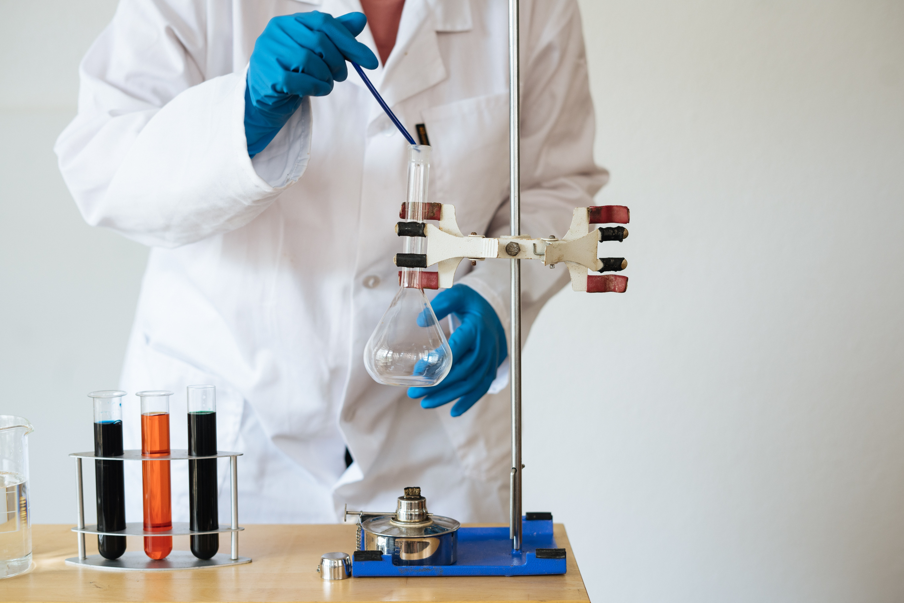
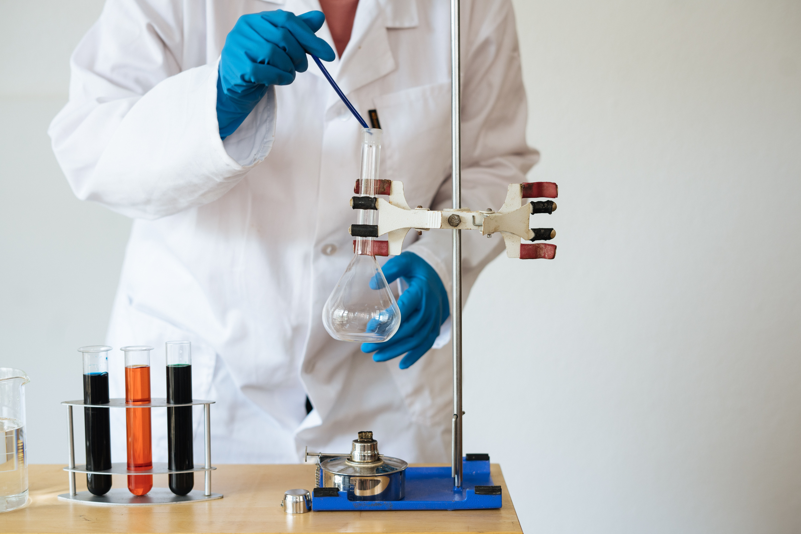
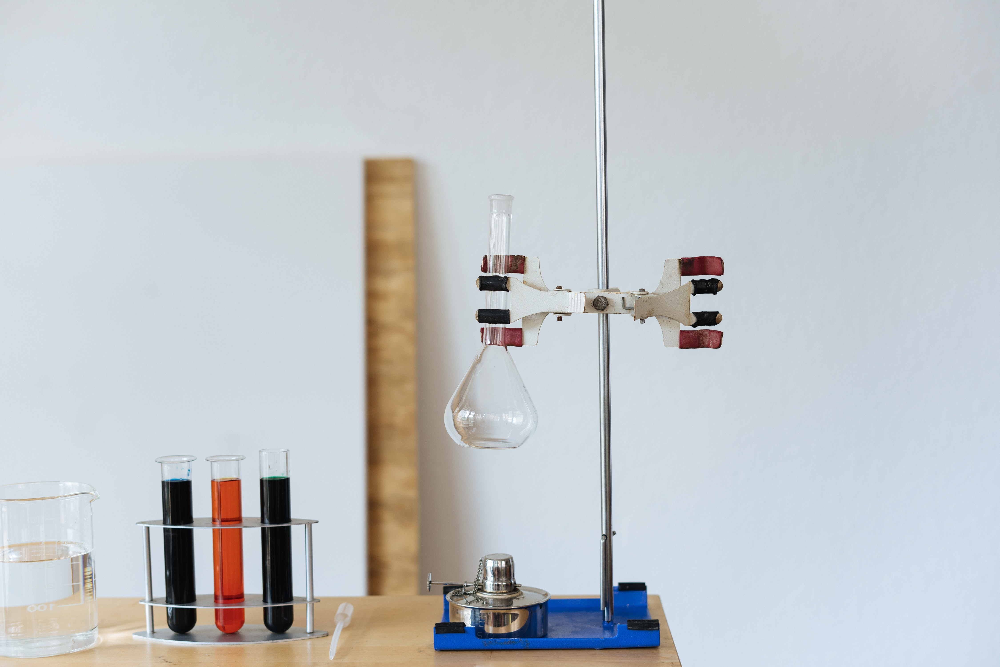
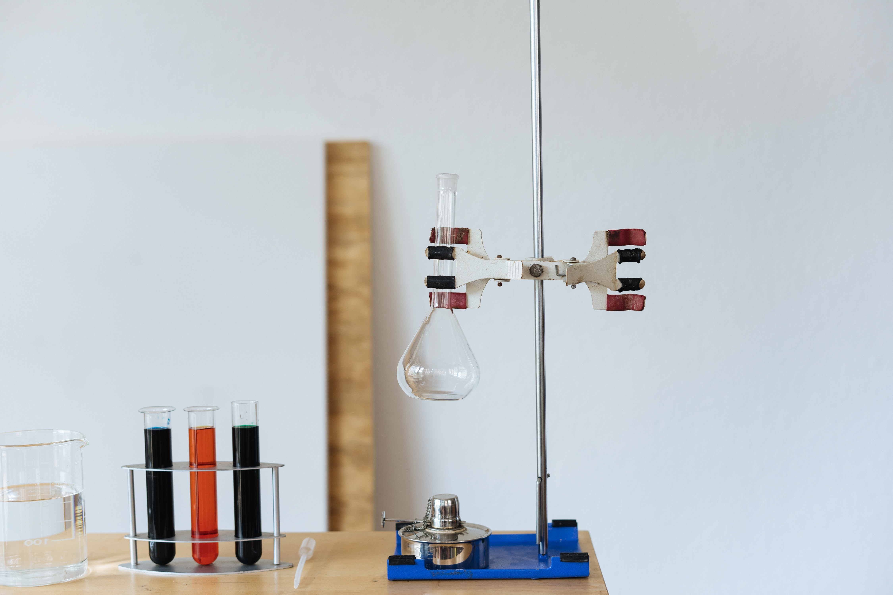

مقدمة حول تاريخ الكيمياء && الفيزياء :
لقد شهد عام 1752 مولد الكيمياء عندها وضع العالم لوموسوف اول تعريف له فهو العلم الذي يعلل مايجري في الاجسام الممتزجة عند حدوث التفاعلات الكيميائية بالاستناد الى موضوعات الفيزياء وتجاربها .ويعود لهذا الرائد الأول للكيمياء فضل اكتشاف قانون فعل الكتلة في التفاعلات الكيميائية كما انه وضع النظرية الحركية للمادة وعلاقتها بدرجة الحرارة . تقدمت فيما بعد أبحاث كيميائية فيزيائية كبيرة نذكر منها اكتشاف امتزاز الغازات من قبل العالم شيل في السويد عام 1773 وفونتانا في فرنسا عام 1777 . اما أسس وقوانين الكينياء الكهربائية فلقد فصلتها واوضحتها أبحاث كل من العلماء فولتا وديفي ثم بتروف وكروتس وفارادي . بينما درس لافوازيه ولابلاس حرارة التفاعلات بين (1770-1874) وادت هذه الدراسة الى وضع قانون ثبوت المحتوى الحراري او قانون هيس عام 1840. اما اكتشاف القانون الأول والثاني للثرموداينميك فلقد تم في منتصف القرن التاسع عشر وذلك بفضل اعمال كارنوت وماير وهلمهولتز وجول وكلازيزوس وثومسون ولقد ساهم هذان القانونان مساهمة كبيرة في تطور علم الكيمياء الفيزياوية . وفي منتصف القرن التاسع عشر حتى الربع الأخير منه تقدمت الدراسات الثرموداينمكية في التوازنات الكيمياوية بفضل العالم جبس وواك وكلدبرغ كما درست سرعة التفاعلات الكيمياوية من قبل وايلهلم . اما حركة الالكترونات في المجاليل فلقد تمت بدراسات هيتور وكوولش بينما درست قوانين توازن المحاليل مع بخارهما على يد كونوفالوف وتطورت نظرية المحاليل على يد مندليف . ان اول من اعطى الكيمياء الفيزياوية كيانها كعلم مستقل يدرس لوحدها هو الأستاذ بيكتوف الذ بدا بتدريسها كمادة مستقلة في جامعة خاركوف منذ عام 1865 كما وانشا لها في هذه الجامعة قسما يحمل اسمها . اما اوستوالد في المانيا فلقد استطاع هو الاخر ام يتشى في هذا البلد اول قسم للكيمياء الفيزياوية وذلك في جامعة ليبريغ عام 1887 وفي هذه الجامعة نفسها أنشئت اول مجلة علمية للكيمياء الفيزياوية كما حمل لواء تطور هذا العلم في هذه الجامعة الأستاذة فانتهوف و ارهينوس واوستوالد ونرنست ومنذ هذه الحقبة تحددت لعلم الكيمياء الفيزياوية ثلاثة اقسام رئيسية هي :- 1- الثرموداينميك الكيمياوي 2- الحركيات الكيمياوية 3- الكيمياء الكهربائية اما تاريخ تطور الكيمياء الفيزياوية في القرن العشرين فهو لايمكن عرضه بلمحة موجزة ولذلك سوف نقدم خطوطه العريضة فقط لثد تم في هذا القرن تطبيق نظرية جديدة مما أدى الى دراسات كثيرة منها دراسة بنية الجزيئات والبلورات بدقة ثم التعرف على طبيعة الاربطة الكيمياوية وقوانينها وذلك بفضل الاستفادة من المنجزات الفيزياوية الضخمة كاستخدام الاشعة المختلفة ومعطيات علم المكانيك وغير ذلك كما وتدخلت في هذا القرن الحاجة الصناعية في دفع عجلة تقدم هذا العلم نحو الامام مماساعد على إيجاد أبحاث ودراسات جديدة كاستعمال الوسائط ودراسة نظرياتها ودراسة الحالات الطاقية للجزيئات في درجات الحرارة العالية وسواها . اما اقسام الكيمياء الفيزياوية :- 1-بنية المادة 2-الثرموديناميك الكيمياوي 3-دراسة المحاليل 4-كيمياء السطوح والغرويات 5-الكيمياء الكهربائية 6-الحركيات والمحفزات 7-الكيمياء الضوئية 8-الكيمياء النظرية والكم 9-علم الاطياف
 

 
